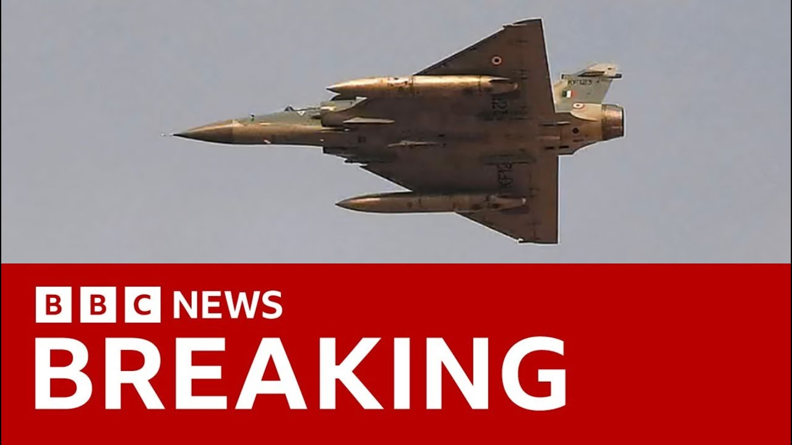

来B站一起耍【Global每日英语简报】
【突发新闻：印度对巴基斯坦及巴控克什米尔发动空袭 | BBC新闻】
Summary: We start with breaking news of India's airstrikes on Pakistan and Pakistan-administered Kashmir, escalating tensions between the nuclear-armed neighbors after a recent militant attack in Kashmir. Pakistan vows retaliation, raising global concerns over potential conflict.
摘要： 我们从突发新闻开始：印度对巴基斯坦及巴控克什米尔发动空袭，此前克什米尔发生致命武装袭击，导致这两个拥核邻国关系急剧恶化。巴基斯坦誓言报复，引发国际社会对潜在冲突的担忧。

⏱️ Estimated Reading Time: 6 min
We start tonight with a breaking story that India has launched an attack on Pakistan and Pakistan administered Kashmir and Jammu.
今晚我们首先报道一则突发新闻：印度对巴基斯坦及巴控克什米尔和查谟地区发动了袭击。
Relations between India and Pakistan, two nuclear powers have long been tense but deteriorated sharply following a deadly militant attack on tourists in Kashmir last month.
印度和巴基斯坦这两个拥核国家关系长期紧张，但上月克什米尔发生针对游客的致命武装袭击后，局势急剧恶化。
Pakistan is vowing to retaliate at a time and place of its choosing.
巴基斯坦誓言将在其选择的时间和地点进行报复。
It looks like that may be underway.
报复行动似乎已经开始。
Our international editor Jeremy Bone is here and Jeremy this news has just come in.
我们的国际编辑杰里米·博恩在现场，杰里米，这一消息刚刚传来。
So what more can you tell us?
你还能告诉我们什么？
Fill us in.
请详细说明。
Well, there are a few things to think about here tonight.
今晚有几件事需要考虑。
First of all, the question is is whether India will decide that their honor has been satisfied after that attack.
首先是印度是否会认为此次袭击已使其荣誉得到满足。
And then the question will be what about the Pakistani response?
其次是巴基斯坦将如何回应？
There's been uh news reports coming out the Pakistanis saying their jets are in the sky at the moment.
有报道称巴基斯坦表示其战机已升空。
So the the nature of their response to this and any escalation that results is clearly going to be something that people are deeply worried about because both of these countries with a long tradition of emnity uh have nuclear weapons.
因此，巴基斯坦的回应性质及可能导致的升级显然令人深感担忧，因为这两个长期敌对的国家都拥有核武器。
Now let's not get ahead of ourselves here.
现在不要过早下结论。
This at the moment is a response to an attack uh which India is blaming on Pakistan on militant groups that are based there and they have hit nine places with various kinds of u um missiles that they've got and they have been hinting that something like this will happen.
目前这是对一次袭击的回应，印度指责巴基斯坦境内的武装组织策划了袭击，并用多种导弹打击了九处目标，此前印度已暗示将采取此类行动。
It's been on the card.
这是意料之中的。
So let's hope thath internationally people are ready to try and calm the situation down to make sure it doesn't go any further than it needs to get because India and Pakistan have a long history of tension between them and over the disputed area of Kashmir which has been disputed since the partition of uh of India uh just after the second world war.
希望国际社会准备好缓和局势，防止事态进一步升级，因为印巴长期存在紧张关系，克什米尔争议地区自二战后印巴分治以来一直存在争端。
Well, as you say, Jeremy, this has been on the cards for some time.
正如你所说，杰里米，这一局势已酝酿多时。
Relations have been extremely tense between the two countries for a number of years.
多年来两国关系一直极度紧张。
Yeah, they have been tense.
是的，关系一直紧张。
And so that's why this is something that you we've got to be concerned about.
因此我们必须对此保持关注。
But also, I think the first of all, both sides will know what the stakes are here.
但首先，双方都清楚其中的利害关系。
So, as I say, really important for everybody looking at this, people who might be worried about it, people who might have family out there, people who are concerned about what may happen.
正如我所说，这对所有关注此事的人——担忧者、当地有亲属者、关心事态发展者——都至关重要。
and journalists must not get ahead of themselves at the moment about this.
记者目前不应过早下结论。
Now, it's obviously it's breaking news in the world, but it's something that now there has to be a major diplomatic push to stop it escalating, to calm things down, for both sides to say, "Right, honor has been satisfied. Now we can draw a line."
显然这是全球突发新闻，但现在需要重大外交努力阻止局势升级、缓和事态，让双方宣布“荣誉已得到维护，现在可以划清界限”。
Jeremy, thank you very much.
杰里米，非常感谢。
Well, we can now go live to Samir Hussein uh reporting from India for us.
现在我们将连线在印度报道的萨米尔·侯赛因。
Samir, what can you tell us?
萨米尔，你能告诉我们什么？
Well, look, so far the only details that we're getting here in India are actually from the Indian government and not the army.
目前我们在印度获得的所有细节都来自印度政府而非军方。
And what they're saying is that they have hit nine targets in Pakistan.
他们表示已打击巴基斯坦境内九处目标。
They're saying that these targets were in fact militant targets.
他们称这些目标实际上是武装分子据点。
They are saying that they did not target the Pakistan military.
他们表示并未针对巴基斯坦军方。
And they're saying that right now actually you're seeing some we're getting some reports of artillery shelling happening between the two countries at some points along the line of control.
他们表示目前有报道称两国在控制线某些地段发生炮击。
And now really what's going to happen is everyone's looking towards Pakistan in terms of what kind of retaliation we may see.
现在所有人都在关注巴基斯坦可能采取何种报复行动。
Now remember it's been 12 days since that attack that happened targeting all these tourists and many people have been wondering about what was going to happen between India and Pakistan.
请记住，针对游客的袭击已过去12天，许多人一直在猜测印巴之间会发生什么。
Remember along this line of control there has been quite a few um quite a long ceasefire that has clearly been breached and so now there's a real concern in terms of what Pakistan's response may be to what's just happened in New Delhi.
控制线沿线长期停火协议已被打破，因此人们真正担心巴基斯坦会对新德里的行动作何反应。
Thank you very much for joining us.
非常感谢你的连线。